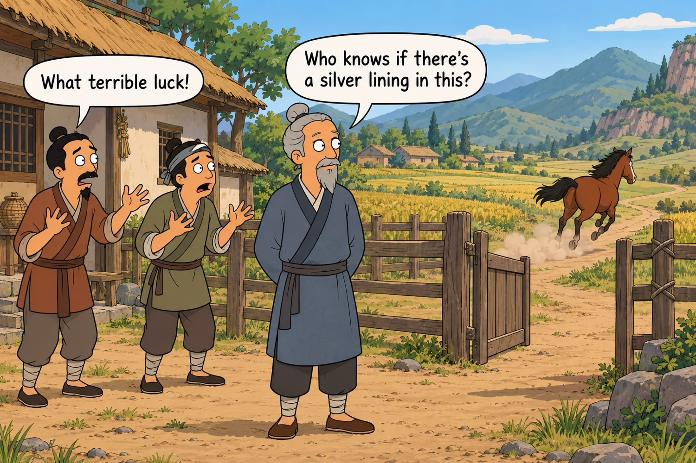
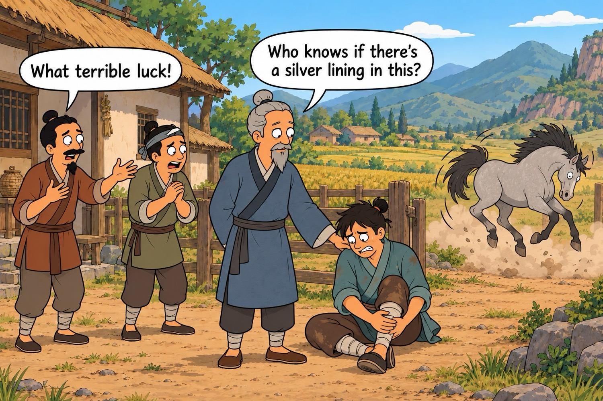
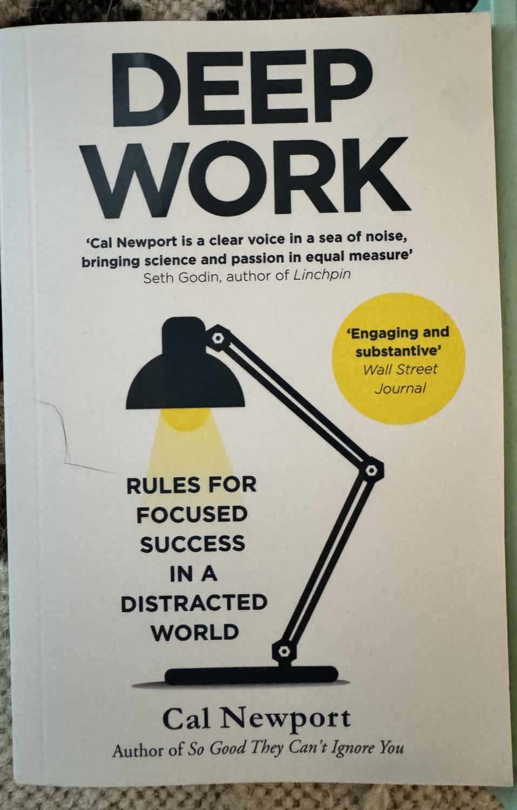
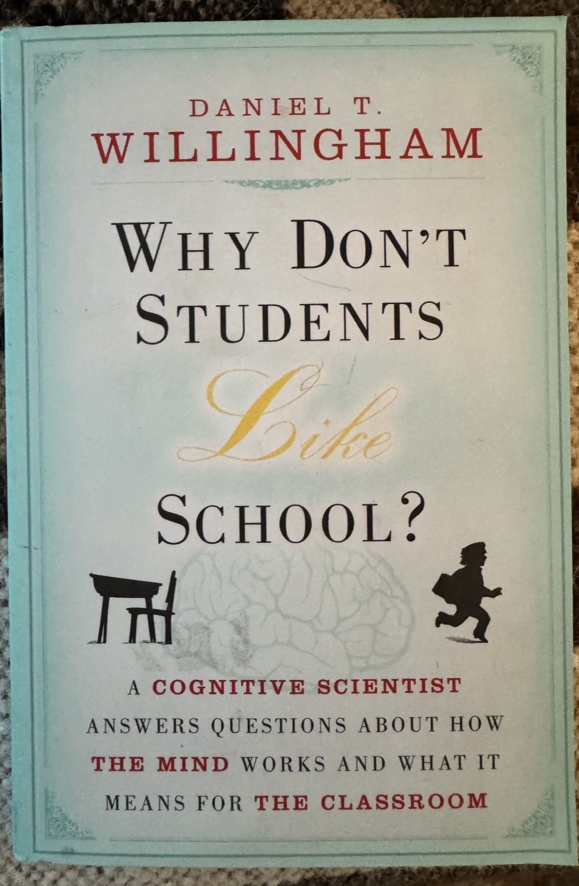
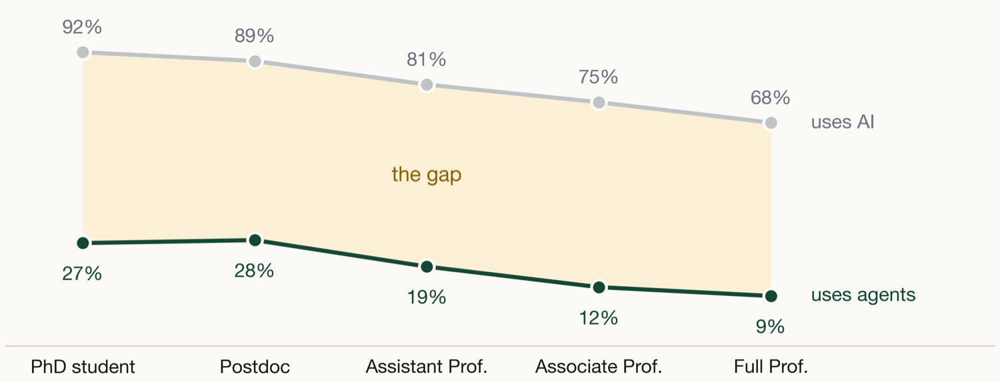
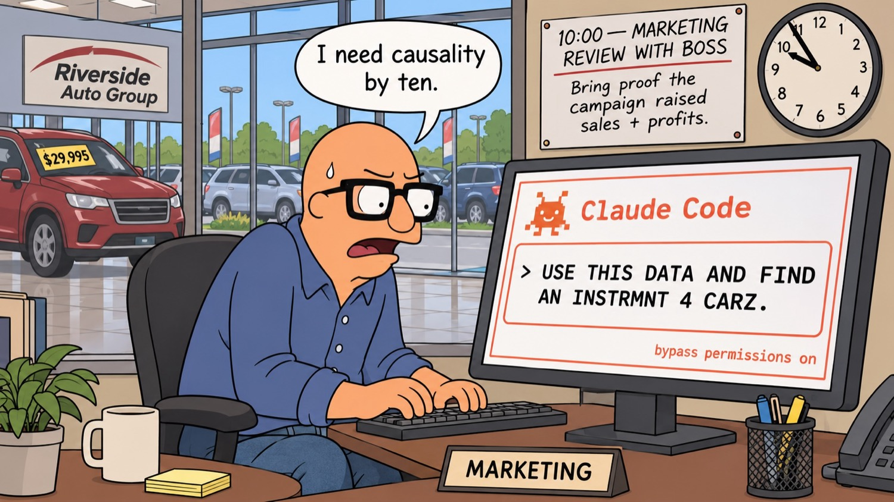
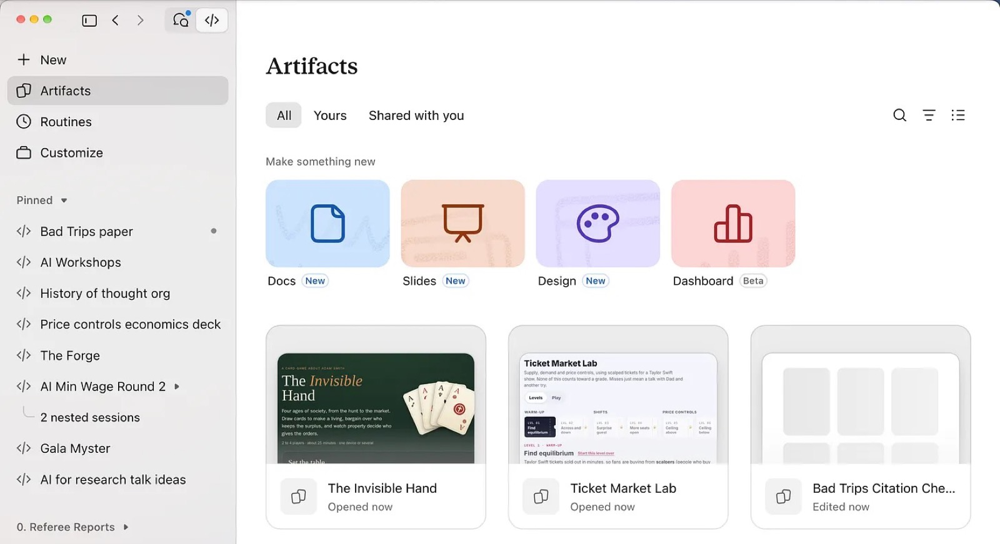
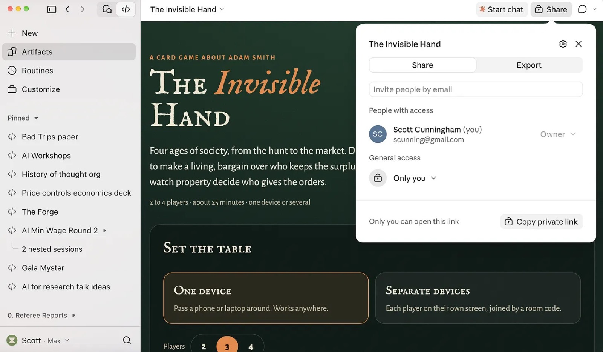
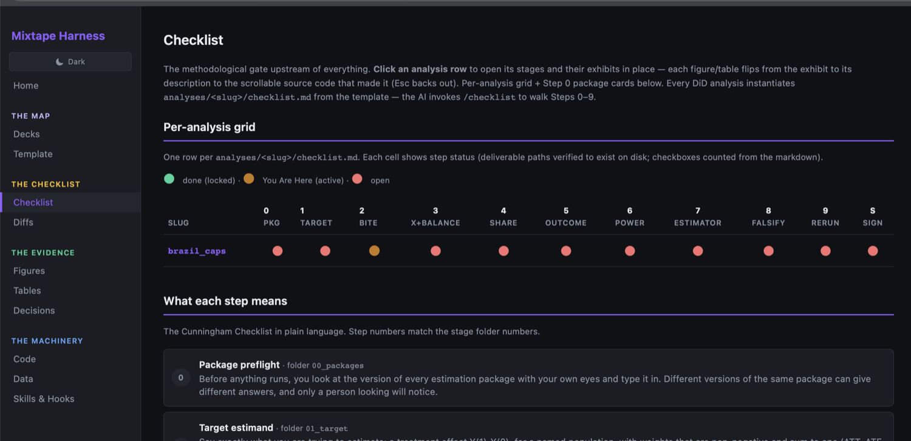

Opportunities and Challenges with Using AI Agents for Empirical Research
What the tools make easy, and the places the same effort can backfire.
Tufts University · Department of Economics · November 4, 2026
Scott Cunningham · Baylor University
George Box
Tuesday, Nov 3 AI agents & the minimum wage
All models are wrong, but some are useful.
Our worries and our optimisms are both models, stories of a future or a past, neither of which exists.
A story first
Wednesday, Nov 4 This talk
The old man who lost his horse
A Daoist parable about how quickly we judge what we cannot yet know.
His horse runs away

“Who knows if this is bad?”
The horse returns, with others
“Who knows if this is good?”
His son breaks his leg

“Who knows if this is bad?”
War comes; the son is spared
Father and son stay together, alive.
What the story says
Are we the neighbors or are we the farmer?
Every turn looked like fortune or disaster, and each was the seed of its opposite.
The neighbors kept building confident stories about what each event meant. The old man did not.
We should be cautious when we say we know what all of this means, and instead focus on the immediate tasks in front of us.
A behavioral model
Threats to human capital
My model of behavior and learning under AI.
The elephant in the room
A worry many educators have
The elephant in the room is deskilling, and it is two things at once.
The depreciation of the human capital we already have, as we stop exercising it.
And the failure to accumulate it in the first place, for those still learning.
What follows is a simple way to formalize that worry, so we can look at it together.
Case I: keep your hours, take the output
Hold H* and output jumps from the pre-AI curve to the post-AI curve. The biggest gain, and your judgment stays intact.
Case II: take some time back, stay in the green
Cut your hours back toward H̄ and output is still above where you started. Some slack is safe.
Case III: cut past H̄ and you deskill
Keep cutting and output falls below pre-AI. Human capital erodes even while the tool makes you look productive.
All three cases, on one plot
How learning actually works
How learning actually works
How learning actually works
How learning actually works
How learning actually works
How learning actually works
This is the way we learn, always and forever.
Automation can skip the middle
Automation can skip the middle
The challenge is that automation skips this.
Decide the goal up front
Substitute, or complement, to learning?
If the goal is cognitive output
The AI bypass is efficient.
Let it skip the middle; you just want the result.
If the goal is to learn
The bypass is the whole problem: it skips the human capital.
So we must incentivize the time inputs.
We have to decide, up front, which goal we are optimizing for.
Where to turn
Two books worth all of our time
Deep Work, Cal Newport, a computer scientist, on long undistracted attention as the scarce input.
Why Don’t Students Like School?, Daniel Willingham, a cognitive scientist, on how memory actually forms.
Deep Work
Incentivize the time

Deep Work
Cal Newport · computer scientist
Reinforces what the production function already said: time and attention, in long unbroken stretches, are the scarce input.
So we incentivize time directly: long projects, aiming to finish real work, not quick turns at the keyboard.
Why Don’t Students Like School?
Choose what they think about

Why Don’t Students Like School?
Daniel T. Willingham · cognitive scientist
People remember what they have to spend time thinking about.
So the task is to choose, deliberately, what we want them thinking about.
Guardrails and checklists are how we point that thinking, and make it stick.
Knowledge stands on three legs
Knowledge, verification, understanding
Knowledge
What is true.
The facts and methods a student actually holds.
Verification
Did I check it?
Confirming the result is really right, not just plausible.
Understanding
Do I see why?
Grasping why the method and the result hold.
Take away verification or understanding, and the stool falls.
A friendly disagreement
So what is judgment?
My third leg
Knowledge
Verification
Understanding
Paul Goldsmith-Pinkham's third leg
Knowledge
Verification
Judgment, what we often call taste
We agree on the first two legs. The open question is the third: understanding, or judgment? And what, exactly, is judgment?
Production functions
The old research production functions have not changed
Shockley (1957).
Research productivity is lognormal: a long right tail
Multiplicative abilities produce a long right tail: most of us cluster low, a few (Einstein) are extreme.Illustrative log-normal curve, not Shockley’s data.
Several abilities, multiplied
Shockley’s answer: do the inputs add, or multiply?
He did not explain the long tail of productivity with raw intelligence.
He broke productivity into several distinct abilities, combined in one simple equation.
Everything turns on one question: do those abilities add, or do they multiply?
If they multiply, a weakness in any one input holds the whole product down.
Add or multiply
Perfect substitutes, or Cobb–Douglas?
Additive: F₁ + F₂ + F₃
The inputs are perfect substitutes.
Lose one input and output falls by just that much.
Buy it back with more of another input, and you are whole again.
Multiplicative: F₁ · F₂ · F₃
Shockley’s claim, a Cobb–Douglas form.
Let one input go to zero and the whole product is zero.
No amount of the others can buy a missing input back.
If abilities multiply, a single weak input caps the whole researcher, and that is what makes the tail so long.
Shockley (1957)
Eight abilities, and intelligence is not one of them
F₁Think of a good problem
F₂Work on it
F₃Recognize a worthwhile result
F₄Decide when to stop and write up
F₅Write adequately
F₆Profit constructively from criticism
F₇Determination to submit to a journal
F₈Persistence in revising after review
My view: the eight are still the inputs. AI is a way to augment them, not a ninth input that replaces a missing one.
What we train
Train the inputs that stay yours
If Shockley’s eight are the real inputs, those are what training should build.
Taste, thinking of good problems, becomes the highest-leverage skill, in economics and in industry alike.
Data acquisition is now trivial; whole careers were built on public data. The scarce step is conceptualizing the problem first.
AI use is ubiquitous; use of agents is not

Part of the gap is just price: chatbots are free, agents are not.Anthropic, May 2026; 1,260 quantitative social scientists. Not a representative sample, so read the gradient, not the level.
More gaps by field
How much of a field’s work was already written as code seems to matter.Same survey. Not a representative sample, so read the spread, not the levels.
A quick introduction
Using agents for research
What an agent is, and the three ways to work with one.
Before the how, the when
When do you use agents?
When the work is highly, highly valuable.
When the time inputs needed to do it are extremely high.
When the probability that you will do a bad job at it is very high.
When the outputs can be verified and understood.
You need all four. With all four, the case for using agents for research is extremely strong.
Passive to autonomous
Agents are different because they act
Chatbot
ChatGPT, Claude.ai
You ask, it answers
→
Co-pilot
Cursor, Copilot
You type, it suggests
→
Agent
Claude Code, Codex
You delegate, it executes
An agent reads files, writes code, runs it, reads the output, and decides what to do next across many steps.
What a language model is
An LLM does one thing: it predicts the next token
the prompt“The minimum wage reduces ______”
Next token
Probability
employment
0.41
poverty
0.22
hours
0.11
inequality
0.09
every other token
0.17
Illustrative numbers, not model output.
The model draws one token from this distribution and appends it.
Then it predicts again, with the longer text as the new input.
An essay, a proof, a Stata do-file: each is thousands of these draws in a row.
Not software, a model that talks
An agent is a language model that talks to your computer
It is the same next-token model as before, not a program wired into your machine.
The difference: its tokens are commands, typed into a terminal the way you or I would type them.
So it can only act where typing is accepted, which is also where it can do harm.
ls data/
list files
rg "minimum wage" .
search text and code
Rscript estimate.R
run an R script
stata -b do analysis.do
run a Stata do-file
git diff
inspect changes
rm -rf data/
delete files, permanently
Tokens, not words
The model reads tokens, not words
Difference-in-differences estimates the treatment effect.
Difference
72917
-in
4200
-d
2469
if
366
ferences
10131
␣estimates
30233
␣the
290
␣treatment
7448
␣effect
3159
.
13
This sentence becomes ten tokens, and each token has an ID number.
Common words are one token, and rare words are split into pieces.
GPT-4o’s vocabulary has 200,019 tokens.
The model never sees letters or words. It sees this list of ten integers.
Real output from OpenAI’s o200k_base tokenizer, the one GPT-4o uses.
Same agent, three places
Three ways to work with an agent
The desktop app
the easiest start, and it keeps every session
The command line
the agent in a terminal window, closest to the machine
An IDE
the agent next to your files, your code, and a terminal
My sense, though, is that the AI labs, Anthropic and OpenAI, are bringing all of this functionality together, particularly in the desktop apps.
The frame for today
Focusing on the research inputs
Let’s ground ourselves in timeless things.
Big Idea #1
Automated research using AI agents is probably a long-run equilibrium
One unit of output needs machine time and human time
The cheapest input mix is interior
Perfect substitutes turn the isoquant into a line
The cheapest mix jumps to the corner: H* = 0
Sober reality
The marginal researcher will likely automate research
Marginal researchers, students and not, face the same equilibrium: take our own theories seriously and it is H = 0, M > 0, the full automation of cognitive output.
Yet there is almost no conceivable way that H = 0 does anything other than reduce human capital.
That claim is itself a model, Becker on human capital and the allocation of time, which we either believe or we don’t.
So: the rest is practical, principles for empirical research built around producing it. I call them the Big Ideas.

The marginal user may be a marketing manager who needs “causality by ten,” reaching for an instrumental variable without the training to judge it.
A new way to collaborate
Working together with artifacts
Sharing our work
New platforms for sharing with coauthors
One thing I think we can do is use the emerging platforms for sharing our work with coauthors.
These are called artifacts, and I think we can all benefit from them, including between professors and students, because they let you communicate with a student immediately.
I think they also open up a lot of opportunities.
Inside the desktop app
Claude Code builds shareable dashboards
An artifact is anything you would put in front of someone: a doc, a deck, a dashboard, or a small interactive tool.
It opens beside the conversation, and it can do almost anything you imagine, limited by your idea, not the tool.
I make my html decks this way now, so I am building artifacts without quite realizing it.

A shared place to work
Comments become directions
Share the artifact with a coauthor by link, and you both can vote, comment, and edit it live.
Those comments function as directions: I point Claude at them, and it redoes the analysis on my machine or in the cloud and updates the deck.
The dashboard builds the scaffolding of the paper while you coordinate around it, remotely.

An odd way to work, but I find it intuitive.
Other use cases I have had
What else artifacts are good for
Voting, with coauthors, on the myriad of exhibits we keep creating.
Developing the narrative and the scaffolding of the paper.
Anything and everything, as far as the imagination goes.
How I work
A harness for working with agents
Dashboards organized around a checklist, so nothing gets skipped.
A new place to remember
I no longer type code, so I built a harness
I used to live inside RStudio or Stata, and the project stayed in my head because my hands built it.
Now I do not type code at all: I think, reason, and direct the agent.
Work arrives so fast that I struggle to remember a project from one day to the next.
So I build muscle memory on purpose, with dashboards organized around the checklist in my book.
I stay inside each stage until it is done

One row per analysis, one column per step. Green is done and locked, amber is where I am, red is open.github.com/scunning1975/mixtape_harness · fork it and build the version that fits how you work.
The pipeline is the ground truth
If it is not produced by the pipeline, it is not evidence
Every table and figure is produced by pipelined code that re-runs from raw data to rebuild the whole analysis.
Nothing is hand-made or remembered: it is regenerated, and every figure traces to the script that made it.
/pipeline re-derives all of it, so “is this output stale?” has an answer.
Provenance is the antidote to amnesia.
The discipline
Design before you look
Checklists, so experts do not skip steps.
Rubin (2008)
Design trumps analysis
Objectivity is not rescued at the analysis stage with a clever regression. It is built at the design stage, before you ever see the outcome.
A randomized experiment is trusted because it is outcome-blind: you cannot tune it to the answer.
An observational study earns that trust only by imposing the same blindness: reconstruct the experiment, find the assignment mechanism, balance covariates, outcomes hidden.
“Final outcome data cannot be used in design without compromising the objectivity of the study design.”
Gawande, The Checklist Manifesto
Experts skip steps, and AI makes the skip silent
It is not novices who skip steps under load. It is experts: overconfidence scales with skill, which is why pilots and surgeons still use written checklists.
Producing and verifying used to be one motion: I understood the code because I wrote it.
Now the agent writes 200 lines in one shot; I can approve work I did not produce and do not fully understand; and the agent is confident even when wrong, so the skip is silent.
A harness re-couples production and verification: it restores what working through agents took away.
Observational causal inference
My checklist has nine steps
State your causal estimand
Show the treatment bites
Select covariates, check balance, trim
Calculate sample shares
Examine outcomes, without estimating
Calculate power
Select the estimator
Falsify and test sensitivity
Rerun the code
Design comes before results: you do not touch the estimator until step 7.
Built from Rubin, Imbens, and Sant’Anna; the practical tips in Causal Inference: The Remix.
Verification
Creating disclosure gaps
Read the trace. Count what the agent did. Report it.
The deeper lesson from the minimum wage
What was hidden in the trace
It was not only that agents are steerable, even unintentionally.
It was not even that they reach for researcher degrees of freedom.
The biggest thing: how much sat in the trace logs, which you, and students, can extract and scrutinize.
Verification is not only code review. It is also studying the tools the agent called: counting them, measuring them, reporting them.
The trace is data
A reasoning agent leaves a trace
What is in a trace
The reasoning the model wrote to itself before it acted.
Every command it ran and every file it opened.
Everything it saw come back, including the errors.
Why it matters to a researcher
Claude Code saves each session to a transcript on your machine.
A transcript is text, so an agent can read hundreds and code what happened.
This is how I learned what my agents did that their output never showed.
The output tells you what the agent concluded. The trace tells you what it did to get there.
A trace from the minimum-wage runs · Kimi (open-weight)
One agent’s account of its own choices
“Post-2009 period chosen because the federal minimum wage was constant at $7.25, creating clean cross-state variation. Callaway–Sant’Anna drops 15 states already treated in 2010. Effective sample: 36 states, 16 treated and 20 never-treated.”Kimi, open-weight · minimum-wage run
Every choice is in the trace: the window, the estimator, the dropped states. We extract these from every run.
Why the closed labs now hide it
Distillation and the vanishing reasoning
Distillation means training your own model on another model’s outputs, including its raw reasoning.
Competitors were training on the raw traces of Claude and OpenAI’s Codex, so both labs stopped publishing raw reasoning.
Claude 4.6 is the last Anthropic model whose reasoning I could read; you still see the actions, the reasoning behind them is suppressed.
Open-weight models (Kimi, DeepSeek, Qwen) still show the full raw reasoning; closed ones give a summary.
Beyond regex
Train a judge, don’t grep
1 · Did they consider it?
Multiple estimators weighed?
An estimand actually stated?
Covariates included, and alternative sets tried?
Sample window and dropped units?
2 · How often was it reported?
Across repeated runs, count how many times each choice was actually reported in the output.
The gap between considered and reported is the thing we measure.
Several humans label a sample, record agreement (Krippendorff’s α), then train the judge to reproduce them and score every run.
Big Idea #2
Teach to the marginal quant
The marginal user
AI lowered the cost of analysis. Who shows up now?
AI pushes the marginal cost of doing empirical work toward zero.
A price fell, so the question is the oldest one we have: who is the marginal user?
The answer decides who you are teaching, and what they still need from you.
Today, the average data analyst has graduate training
AI drops the cost of analysis to nearly zero
If demand is inelastic, the next user looks like the last one
If demand is elastic, the next user is everyone
A marginal cost near zero
Free production moves two margins
The intensive margin: us
Each of us produces more than before.
The extra work sits lower on the demand curve, so it is worth less.
Managing that volume takes workflows we have never needed.
Confusing logistically, and confusing psychologically.
The extensive margin: everyone else
The cost of entry fell along with the cost of production.
People with no training in our methods can now produce our kind of output.
Nothing in that output shows whether it was understood or verified.
More from each of us, and more of us: both follow from a marginal cost near zero.
The intensive margin
You will make more than you can understand
You will do far more work than you ever could.
Much of it exotic and hard to understand, outside your expertise, whoever you are.
With tenure, publishing, and promotion, your own demand is elastic, so you make a ton of it.
You get lost in your own work. That is why I use a checklist and a harness.
The folder fills up
Output nobody has looked at
Before: every figure cost hours, so I made only the ones I needed.
Now: figures and tables cost nothing, so they pile up like a messy kid’s room.
The problem: stale code and drifted numbers hide in the pile.
Making one more costs nothing. Checking it still costs my time.
Big Idea #5
Teach estimand, then estimator, then estimate
Where I’d start
Guide the production: estimand, estimator, estimate
Estimand
A theoretical object.
Defined on the whole population.
No standard error.
No sampling distribution.
e.g. the ATT
Estimator
A recipe applied to a sample.
Uses data drawn from the population.
Has a sampling distribution.
So we have to teach sampling distributions.
e.g. Callaway–Sant’Anna, TWFE
Estimate
A specific number.
What the recipe returns on your data.
Reported with its standard error.
e.g. −0.52 (SE 0.25)
Why I recommend it: the agents outcome-searched because nothing pinned the estimand, yet they kept full discretion over the estimator.
Step 1
Stating your estimand closes off a lot of p-hacking
An estimand is the quantity you are trying to learn, written down before you touch the data.
When the target is vague, people, and agents, search until something looks good.
You have to be very precise, and Claude can help you write it down.
If you cannot write your estimand down, you do not yet know what you are estimating.
Potential outcomes
A causal estimand is written in potential outcomes
Estimand
Definition
Average treatment effect (ATE)
E[ Y(1) − Y(0) ]
ATE on the treated (ATT)
E[ Y(1) − Y(0) | D=1 ]
Conditional ATT at X = x
E[ Y(1) − Y(0) | D=1, X=x ]
Y(1), Y(0) are each unit’s outcome with and without treatment; D=1 marks the treated.
Let the design choose
The estimator follows from how treatment was assigned
If treatment was assigned…
you might use…
at random
a simple comparison of means
at random, given covariates
matching or regression on those covariates
through a random instrument
instrumental variables
not at random, but trends would have been parallel
difference-in-differences
Estimand first, estimator from the assignment mechanism, estimate last.
Why this is a pillar
Estimand-ambiguity is what the cues exploit
In the minimum-wage experiments, agents outcome-searched most when nothing pinned the estimand down.
Cues, intentional or not, a literature, a name, a stray document, fill that vacuum and steer the result.
Pin the estimand and the search space collapses: the question is fixed before any result can bend it.
So make estimand, estimator, estimate a pillar of our classes and our practice, not just a definition on a slide.
The real question
Production, Verification, Understanding
Agents have handed us a large amount of time. The question is whether we spend it on verification and understanding, the two parts that stay ours as production becomes nearly free.